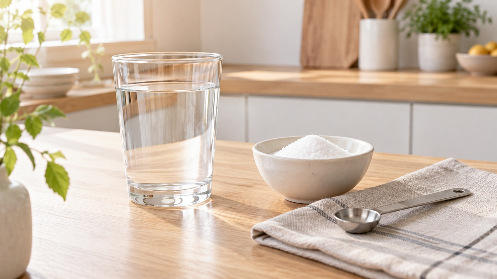
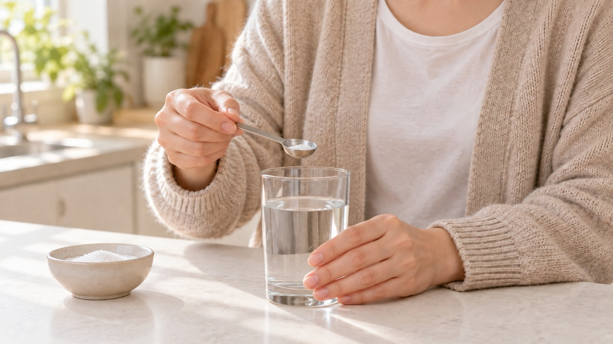
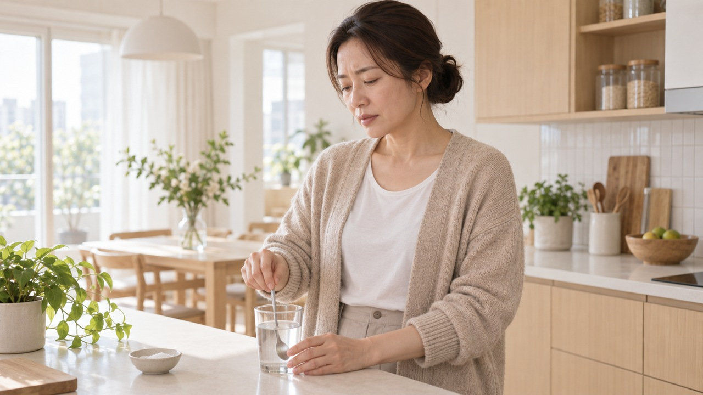
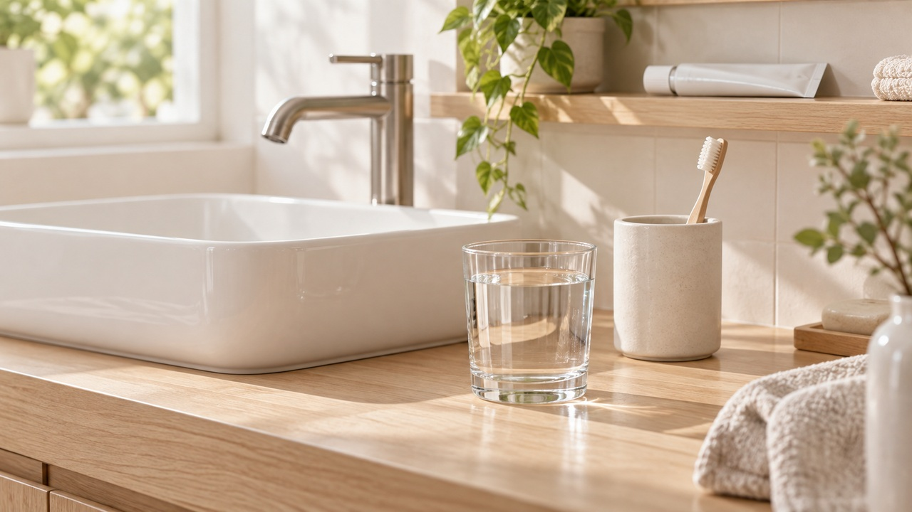
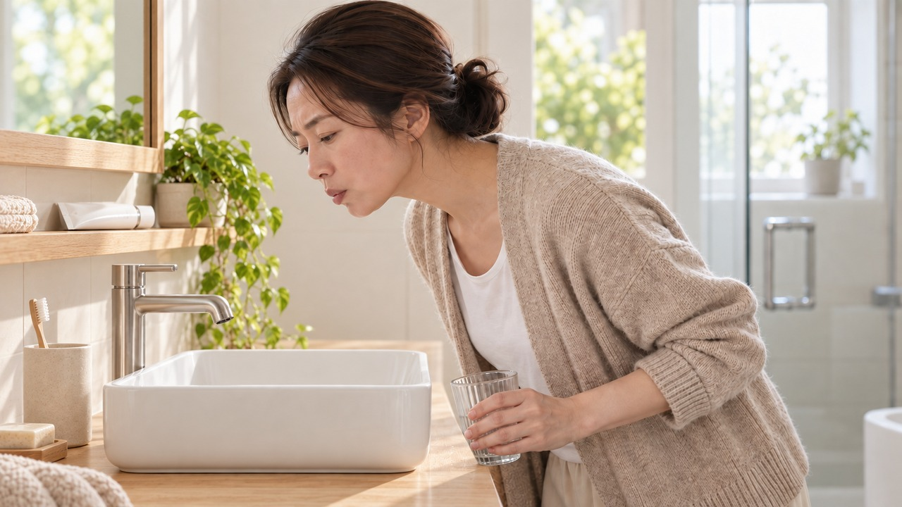

스티커 안내는 편집용입니다. 본문 복사에서는 제외됩니다. 사진은 images 폴더에서 순서대로 첨부하세요.
"목이 따끔거려요" 소금물 가글 배합과 양치 후 사용 시 안전 수칙

아침에 일어났는데 목이 따끔거리고
침 삼킬 때마다 칼칼해서 멈칫하셨나요?
가을 환절기 찬 바람이 불기 시작하면
집에서 먼저 소금물 가글부터 떠올리게 되지요.
하지만 잘못된 비율이나 잘못된 방법으로 가글하면
오히려 목 점막이 더 따갑고 쓰라릴 수 있습니다.
환절기 칼칼한 목을 부드럽게 달래주는
올바른 소금물 배합 비율과 양치 후 안전 수칙을 차근차근 정리해 드릴게요.
| 소금을 많이 넣을수록 소독이 잘될까요
목이 부었을 때 소금을 진하게 타서 입안을 헹구면
균이 말끔히 소독될 것처럼 기대하기 쉽습니다.
하지만 소금물 가글은 목 안의 균을 직접 없애주는 소독약이 아니라,
건조하고 부은 점막을 촉촉하게 적셔주는 보조 요법이에요.
오히려 소금을 너무 많이 넣으면 삼투압 때문에
연약한 목 점막의 수분을 빼앗겨 통증이 더 심해질 수 있습니다.
목이 아플수록 진한 농도가 아니라,
자극 없이 부드러운 적정 농도를 지키는 것이 무엇보다 중요합니다.
| 따뜻한 물 한 컵과 소금 반 티스푼의 기준

둘째, 집에서 간편하게 맞추는 방법은
물컵을 활용하는 것입니다.
우리가 일상에서 흔히 쓰는 물컵 한 잔을 준비해 주세요.
여기에 작은 티스푼으로 깎아서 반 스푼의 소금을 넣고
물이 투명해질 때까지 충분히 저어줍니다.
약국의 멸균 생리식염수는 정밀하게 조제된 규격 식염수이며,
가정용 소금물은 점막을 적셔주는 보조 수단입니다.

여기서 물의 온도도 무척 중요합니다.
소금이 잘 녹도록 따뜻한 물을 사용하세요. 입에 머금기 불편할 만큼 뜨거운 물은 피하세요.
손등에 닿았을 때 편안하고 따뜻한 미온수를 사용하면
목 점막에 자극 없이 편안하게 가글할 수 있어요.
소금 알갱이가 바닥에 남지 않도록
투명해질 때까지 충분히 저어 충분히 저어 맑게 녹여주세요.
| 양치 직후 가글은 피하고 삼키지 마세요

셋째, 이 닦고 개운한 마음에
곧바로 소금물로 가글하는 것은 피하는 것이 좋습니다.
양치질을 마친 뒤에는 물로 입안을 깨끗하게 헹구어 마무리해 주세요.
소금물 가글은 양치 직후 연달아 하기보다,
식후 일정 시간이 지나거나 외출 후 등
양치와 분리된 별도 시간대에 하는 것이 안전합니다.

가글할 때는 고개를 살짝 뒤로 젖히고
'아~' 소리를 내며 목 안쪽까지 고르게 적신 뒤 뱉어냅니다.
목 안의 분비물과 염분이 섞여 있으므로
절대로 삼키지 말고 뱉어내야 합니다.
물을 스스로 뱉지 못하고 삼키기 쉬운 어린이는
소금물 가글을 시도하지 않아야 합니다.
가글 후 입안에 짠 기운이 많이 남아 있다면
미지근한 맹물로 입안만 가볍게 한 번 헹궈내어 잔여 염분을 정리해 주세요.
| 이런 증상이 있다면 전문 진료가 먼저예요
목 통증이 있을 때 모든 상황을
단순 소금물 가글로만 해결하려 해서는 안 됩니다.
가벼운 목 통증이라도 며칠 동안 쉽게 호전되지 않거나
자주 반복된다면 가글에만 의존하기보다
가까운 이비인후과 진료를 받는 것이 안전합니다.
소금물 가글은 초기 목 불편감을 달래주는 보조 관리법일 뿐,
개별적인 전문 진료를 대신할 수 없습니다.
환절기 목 건강을 지키는 나만의 생활 습관이 있다면
댓글로 편하게 이야기 나눠주세요.
여러분의 편안하고 건강한 가을을 응원하는 에디터 혀니였습니다.
#소금물가글 #소금물가글농도 #환절기목통증 #목칼칼할때 #소금물가글비율 #종이컵소금물 #인후염가글 #구강관리 #환절기건강 #에디터혀니 #꿀단지